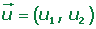
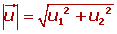
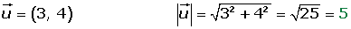
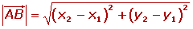
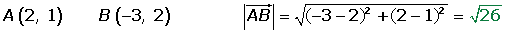
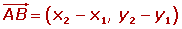
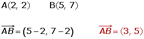
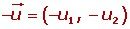
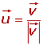
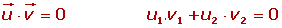

Vectores
Vectores
Un vector fijo es un segmento orientado que va del punto A (origen) al punto B (extremo).
Elementos de un vector
1Dirección de un vector: La direcccíon del vector es la dirección de la recta que contiene al vector o de cualquier recta paralela a ella.
2Sentido de un vector: El sentido del vector  es el que va desde el origen A al extremo B.
es el que va desde el origen A al extremo B.
3Módulo de un vector:
El módulo del vector  es la longitud del segmento AB, se representa por .
es la longitud del segmento AB, se representa por .
El módulo de un vector es un número siempre positivo o cero.
3.1. Módulo de un vector a partir de sus componentes:



3.2. Módulo a partir de las coordenadas de los puntos:



4Coordenadas de un vector:
Si las coordenadas de los puntos extremos, A y B, son:
Las coordenadas del vector  son las coordenadas del extremo menos las coordenadas del origen.
son las coordenadas del extremo menos las coordenadas del origen.


Clases de vectores
1 Vectores equipolentes:
Dos vectores son equipolentes cuando tienen igual módulo, dirección y sentido.
2 Vectores libres:
El conjunto de todos los vectores equipolentes entre sí se llama vector libre. Cada vector fijo es un representante del vector libre.
3 Vectores fijos:
Un vector fijo es un representante del vector libre. Es decir, los vectores fijos tienen el mismo módulo, dirección, sentido y origen.
4 Vectores ligados:
Los vectores ligados son vectores equipolentes que actúan en la misma recta. Es decir, los vectores fijos tienen el mismo módulo, dirección, sentido y se encuentran en la misma recta.
5 Vectores opuestos:
Los vectores opuestos tienen el mismo módulo, dirección, y distinto sentido.

6 Vectores unitarios:
Los vectores untario tienen de módulo, la unidad.
Para obtener un vector unitario, de la misma dirección y sentido que el vector dado se divide éste por su módulo.

7 Vectores concurrentes:
Los vectores concurrentes tienen el mismo origen.
8 Vectores de posición:
El vector  que une el origen de coordenadas O con un punto P se llama vector de posición del punto P.
que une el origen de coordenadas O con un punto P se llama vector de posición del punto P.
9 Vectores linealmente dependientes:
Varios vectores libres del plano son linealmente dependientes si existe una combinación lineal de ellos que sea igual al vector cero, sin que sean cero todos los coeficientes de la combinación lineal.

10 Vectores linealmente independientes:
Varios vectores libres son linealmente independientes si ninguno de ellos se puede expresar como combinación lineal de los otros.

a1 = a2 = ··· = an = 0
11 Vectores ortogonales:
Dos vectores son ortogonales o perpendiculares si su producto escalar es cero.

12 Vectores ortonormales:
Dos vectores son ortonormales si:
1. Su producto escalar es cero.
2. Los dos vectores son unitarios.